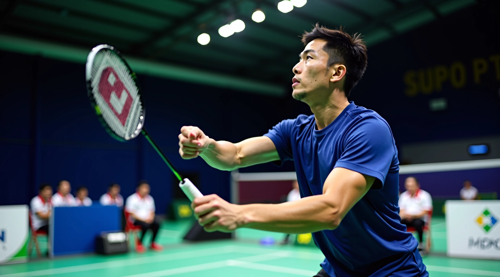
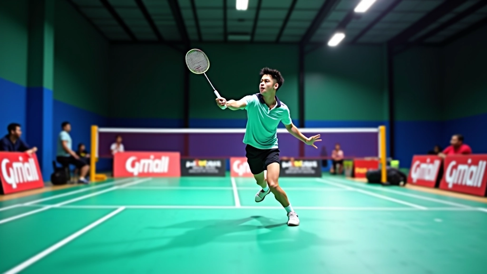
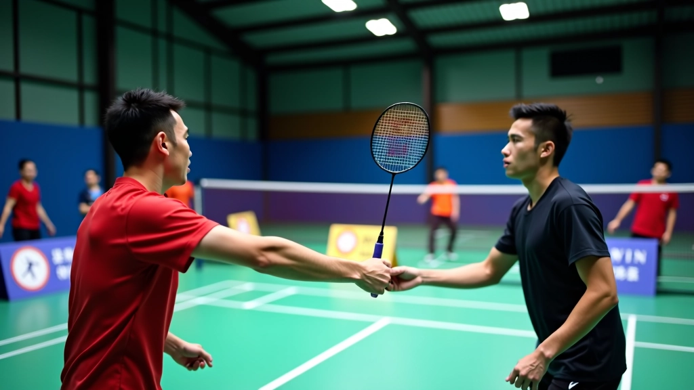

تحسين دقة الضربة: تقنيات متقدمة
استكشف الحركات المتقدمة والتعديلات الدقيقة التي تزيد من دقة إرسالك الخلفي وتحكمك بالاتجاه والسرعة
اقرأ المزيدتعلم المبادئ الأساسية للإرسال الخلفي من خلال شرح تفصيلي للوقفة الصحيحة وحركة الذراع والتوقيت المثالي

فريق التحرير
كتبه فريق دقة الريشة للإرسال الخلفي، المركز على تقديم إرشادات عملية وسهلة المتابعة لتحسين الأداء.
الإرسال الخلفي هو أحد أساسيات الريشة الطائرة التي لا يمكن تجاهلها. يختلف تماماً عن الإرسال الأمامي في الحركة والمبادئ. عندما تتقن الإرسال الخلفي، ستلاحظ تحسناً كبيراً في تحكمك بالمباراة.
المشكلة أن معظم المبتدئين يركزون على الإرسال الأمامي فقط ويتركون الخلفي. هذا خطأ شائع جداً. الإرسال الخلفي يتطلب ممارسة منتظمة وتركيزاً على التفاصيل الصغيرة. لكن النتيجة تستحق كل جهد.
حقيقة مهمة: لاعبو المستويات العليا يمضون 30% من وقت التدريب على الإرسال الخلفي لأنهم يعرفون أهميته.

كل شيء يبدأ من القدمين. الوقفة الصحيحة تعني أن تكون قدمك الخلفية متقدمة قليلاً عن الأمامية. الكتفان يجب أن يكونا مفتوحين نحو الشبكة، والجسم في وضع مريح لكن متأهب.
المسافة بين القدمين تقريباً بعرض الكتفين. لا تقف بطريقة صلبة جداً — يجب أن تشعر بمرونة في ركبتيك. الوزن يجب أن ينتقل من الرجل الخلفية إلى الأمامية أثناء الضربة. هذا الانتقال هو ما يعطيك القوة.
الذراع في الإرسال الخلفي تتحرك بطريقة مختلفة تماماً عن الإرسال الأمامي. المضرب يبدأ بالقرب من جسدك، ثم يتحرك للخارج في حركة دائرية سلسة. يجب أن تشعر أن الحركة تأتي من الكتف وليس من المعصم فقط.
اللحظة الحرجة هي عندما يلمس المضرب الريشة. يجب أن تكون الحركة سلسة وليست متقطعة. كثير من المبتدئين يتوقفون قبل لحظة الاتصال وهذا يقلل القوة والدقة. حاول أن تتخيل أن حركتك تستمر بعد لحظة الاتصال.
المضرب يبدأ بالقرب من الجسم بارتفاع الخصر
الحركة للخارج والأمام بسلاسة
الاتصال برفق وتابع الحركة للأمام
اكتشف المقالات المرتبطة لتحسين أدائك في الإرسال الخلفي
استكشف الحركات المتقدمة والتعديلات الدقيقة التي تزيد من دقة إرسالك الخلفي وتحكمك بالاتجاه والسرعة
اقرأ المزيد
خطة تدريب شاملة لمدة أسبوع تركز على تطوير قوة الإرسال الخلفي والتحكم بالتوجيه والاستقرار في الأداء
اقرأ المزيد
تحديد الأخطاء الأكثر شيوعاً في الإرسال الخلفي وطرق عملية لتصحيحها وتجنبها في المباريات الفعلية
اقرأ المزيدالتوقيت هو كل شيء في الإرسال الخلفي. يجب أن تطلق الريشة في اللحظة المناسبة تماماً حتى يصل المضرب إليها في أفضل نقطة اتصال. إذا أطلقت الريشة متأخراً أو مبكراً، ستفقد التحكم والقوة.
تدرب على إطلاق الريشة بنعومة من على أصابعك. لا ترميها بقوة — فقط اتركها تسقط برفق. يجب أن تكون على ارتفاع الخصر تقريباً عندما يلمسها المضرب. هذا الارتفاع يعطيك التحكم الأفضل والدقة العالية.
مارس الإرسال بدون الريشة أولاً. حرك ذراعك 10 مرات بالحركة الصحيحة. ثم أضف الريشة وركز على التوقيت. لا تقلق من القوة — ركز على الدقة أولاً. القوة ستأتي مع الممارسة.
الآن أنت تعرف المبادئ الأساسية. الخطوة التالية هي الممارسة المنتظمة. ابدأ بـ 15-20 دقيقة يومياً على الأقل. في البداية، لا تقلق من إصابة المنطقة المحددة للإرسال — ركز على الحركة الصحيحة فقط.
بعد أسبوع أو أسبوعين من الممارسة المنتظمة، ستبدأ ترى التحسن. جسدك سيتعود على الحركة. لا تستسلم إذا كانت النتائج بطيئة في البداية. كل لاعب مشهور بدأ من هنا — من الأساسيات البسيطة.
تعلم الحركة الصحيحة، قد تشعر بعدم الارتياح
تحسن ملحوظ في الدقة والاستقرار
إرسال موثوق وقابل للاستخدام في المباريات
أساسيات الإرسال الخلفي ليست معقدة. وقفة صحيحة، حركة ذراع سلسة، وتوقيت مثالي — هذا كل ما تحتاج. الشيء الأهم هو الممارسة المنتظمة. حتى 15 دقيقة يومياً ستحدث فرقاً كبيراً بعد شهر واحد.
لا تتوقع الكمال من اليوم الأول. كل لاعب محترف مر بنفس المرحلة. الفرق هو أنهم استمروا في الممارسة. استمع إلى جسدك، وتعلم من الأخطاء، واستمتع بالعملية. الإرسال الخلفي القوي سيأتي مع الوقت والصبر.
اكتشف برنامج التدريب الأسبوعيهذا المقال مخصص لأغراض تعليمية وإعلامية فقط. المعلومات المقدمة هنا تعتمد على أساسيات الريشة الطائرة المعروفة. إذا كنت تعاني من أي إصابة أو ألم، يرجى استشارة متخصص طبي قبل البدء بأي برنامج تدريبي. كل شخص يختلف عن الآخر، والممارسة الآمنة والصحيحة ضرورية جداً. تقدم آمن وبدون عجلة هو المفتاح.